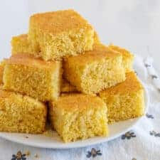

Cornbread

Try out this amazing cornbread recipe from OUR favorite grandma
The perfect dessert to go along with your favorite meal.
Ingredients
- 1/2 cup butter
- 2/3 cup white sugar
- 2 large eggs
- 1 cup buttermilk
- 1/2 teaspoon baking soda
- 1 cup cornmeal
- 1 cup all-purpose flour
- 1/4 teaspoon salt
Directions
- Preheat the oven to 375 degrees F (175 degrees C). Grease an 8-inch square pan
- Melt butter in a large skillet over medium heat. Remove from heat and stir in sugar. Quickly whisk in eggs.
- Combine buttermilk and baking soda in a small bowl; whisk mixture into the skillet. Stir in cornmeal, flour, and salt until well-blended and only a few lumps remain. Pour batter into the prepared pan.
- Bake in the preheated oven until a toothpick inserted in the center comes out clean, 30 to 40 minutes.
Back to main